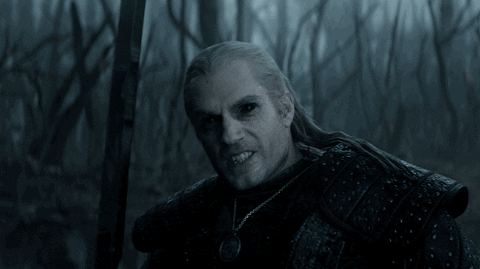

Cavaleiro da Lua
Uma nova série emocionante chega à Powder;Gate! Acompanhe as aventuras de Marc Spector, um ex-mercenário que se torna o avatar do deus egípcio Khonshu.
8.7
45min
2022
Vídeos Semelhantes
Steins;Gate
Um grupo de amigos modifica uma micro-ondas, transformando-a em uma máquina capaz de enviar mensagens para o passado.

The Witcher
Geralt de Rivia, um caçador de monstros mutante, luta para encontrar seu lugar em um mundo onde as pessoas frequentemente se provam mais perversas que as bestas.

Pathologic
Em uma cidade remota assolada por uma doença misteriosa, três curandeiros lutam contra o tempo para salvar a população.

Null
Informações sobre o vídeo Null não disponíveis.
Hylics
Uma aventura surreal em um mundo pós-apocalíptico, onde a realidade e o sonho se misturam em uma jornada única.